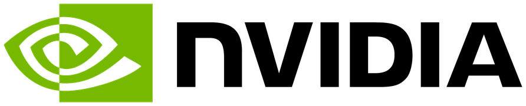

Lab for UI and Attention
LUNA Lab
Building AI-Powered Interfaces That Truly Understand Users.
About LUNA
The Lab for UI and Attention (LUNA) is a research laboratory at the School of Computing, University of Utah, directed by Prof. Yue Jiang. We develop human-centered technologies that enhance human capabilities by adapting to users and their contexts.
Our work sits at the intersection of Human-Computer Interaction, Computational UI, Eye Tracking, and Multimodal AI. We build systems that understand how people see, think, and interact — and use that understanding to make interfaces smarter, more accessible, and more expressive.
We contribute new algorithms, models, datasets, and interactive systems that advance research and practice across graphical user interfaces, extended reality, and multimodal interaction. Our work spans from computational representations of UIs, to predicting where users look, to designing interfaces that adapt and respond intelligently.
We are actively looking for new students, including PhD students for Fall 2027, especially those interested in generative UI, UI agents, eye tracking, digital accessibility, and AR/VR. Learn how to get involved
Research Themes
Computational UI
Graph- and constraint-based representations of graphical interfaces for learning, optimization, and adaptation.
Eye Tracking & Attention
Understanding and predicting where users look across UI types — from desktop GUIs to data visualizations.
UI Agents & Automation
Vision-language models for UI understanding, accessibility testing, and intelligent UI automation.
Multimodal Interaction
Designing expressive XR and multimodal interfaces that adapt to human context and sensory channels.
LUNA is part of the
Human-Centered Computing (HCC) group
at the University of Utah School of Computing.
View our research code on GitHub

NVIDIA'" />